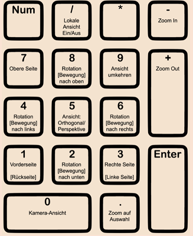

3. Navigation der Ansicht im 3D-Viewport
Navigation in der 3D-Ansicht
Die Ansicht auf die Objekte im 3D-Viewport kann beliebig verändert werden. Nebst der standardmässigen Ansichtssteuerung über die Maus kann auch das Nummernfeld der Tastatur verwendet werden. In der Regel werden beide Optionen verwendet. Die Navigation mit der Maus bietet tendenziell eine grössere Flexibilität, während die Navigation mit der Tastatur eine grössere Präzision ermöglicht.
Navigation mit der Maus
Ansicht mit der Maus verändern
Je nach Aufbau der verwendeten Computermaus unterscheidet sich die Navigation durch den 3D-Viewport mit der Maus etwas. Bei einer Computermaus mit einem Mausrad erfolgt die Navigation im 3D-Viewport durch Mausbewegungen bei gedrückter Rad-Taste. Bei Trackpads oder Mäusen mit integriertem Trackpad erfolgt die Navigation mittels Wischbewegungen. Bei einer normalen Bewegung wird dabei lediglich die Ansicht entsprechend der Bewegung rotiert. Durch gleichzeitiges Drücken der ShiftShift-Taste wird die Ansicht in die entsprechenden Richtungen bewegt (ohne eine Rotation). Mittels gedrückter CtrlCtrl-Taste kann durch die Mausbewegung hinein- oder hinausgezoomt werden. Durch das Drehen des Mausrads wird die Ansicht ebenfalls hinein- oder hinausgezoomt.
Navigation mit der Tastatur
Emulation des Nummernblocks
Nebst der Maus kann auch die Tastatur verwendet werden, um die Ansicht zu verändern. Diese Option ergibt sich allerdings nur, wenn man über einen Nummernblock verfügt. Wenn kein Nummernblock zur Verfügung steht, lassen sich auch die Zahlen-Tasten oberhalb der Buchstaben für die Navigation verwenden. Hierfür muss allerdings in den Benutzereinstellungen («Edit | Preferences») in den Einstellungen zum «Input» beim Keyboard-Reiter die Einstellung «Emulate Numpad» aktiviert werden.
Rotieren und Drehen der Ansicht
Mittels der Tasten22, 44, 66 und 88 kann die Ansicht entsprechend ihrer relativen Anordnung auf dem Nummernblock rotiert werden: Die Taste 22 rotiert nach unten, die Taste 44 nach links, die Taste 66 nach rechts und die Taste 88 nach oben. Werden dieselben Tasten bei gedrückter CtrlCtrl-Taste gedrückt, wird die Ansicht in die entsprechende Richtung bewegt, ohne eine Rotation durchzuführen. Mittels gedrückter ShiftShift-Taste kann die Ansicht durch die Taste 66 zudem im Uhrzeigersinn und mittels der Taste 44 gegen den Uhrzeigersinn gedreht werden. Um näher hineinzuzoomen wird die Taste ++ und zum Hinauszoomen die Taste -- verwendet.
Präzise Ansichten ansteuern
Mittels der Taste 11 kann die Ansicht direkt in die Vorderansicht gedreht werden. Die Ansicht erfolgt anschliessend entlang der Y-Achse. Die Rückansicht ist mit der Tastenkombination CtrlCtrl + 11 einstellbar. Mittels der Taste wird die Seitenansicht – von der rechten Seite aus zum Objekt hingewählt. Das Objekt wird in diesem Falle entlang der X-Achse betrachtet. Mit der Tastenkombination CtrlCtrl + 33 ist die Seitenansicht von der linken Seite aus einstellbar. Um die Szene aus der Vogelperspektive zu betrachten, kann die Taste 77 gedrückt werden. Hierbei erfolgt die Ansicht der Z-Achse entlang. Mittels der Tastenkombination CtrlCtrl + 77 erfolgt die Ansicht von unten.
Perspektivische und orthogonale Darstelung
Jede der Ansichten kann auf zwei Arten erfolgen: perspektivisch oder orthogonal. Die perspektivische Ansicht berücksichtigt Tiefeninformationen, sodass weiter entfernte Objekte kleiner dargestellt werden. Die orthogonale Perspektive ignoriert die Tiefeninformationen, wodurch weiter entfernte Objekte gleich gross angezeigt werden wie nähere gleich grosse Objekte auf der entsprechenden Achse. Diese Perspektive hat den Vorteil, dass Objekte in ihrer geometrischen Form in 2D betrachtet werden können. Mittels der Taste 55 kann zwischen diesen beiden Ansichtsmodi gewechselt werden.
Kamera-Ansicht
Mittels der Taste 00 kann die Ansicht direkt in die Position der Kamera gelegt werden. Dadurch wird die Szene genau so betrachtet, wie sie im finalen Render betrachtet werden wird. Wenn in einer Szene keine Kamera vorhanden ist, steht diese Ansicht nicht zur Verfügung.Wenn mehrere Kameras vorhanden sind, wird jeweils die Kamera, welche die aktive Render Kamera darstellt, anvisiert. Um die Kameraperspektive zu verlassen kann die Ansicht mittels der Maus bewegt werden, oder erneut die Taste 00 gedrückt werden.
Merke…

Fokus auf ein Objekt
In komplexeren Szenen kann es sein, dass man die Übersicht über die Objekte verliert, oder dass sie sich gegenseitig im Weg stehen bei der Ansicht. Mittels der Taste .. auf dem Nummernblock wird die Ansicht direkt auf ein ausgewähltes Objekt gezoomt. Diese Aktion lässt sich nicht mit der Taste .. ausserhalb des Nummernblocks emulieren. Mittels der Taste // kann zudem die lokale Ansicht aktiviert werden. In dieser Ansicht wird lediglich das ausgewählte Objekt dargestellt, sodass es in komplexen Szenen besser betrachtet werden kann. Allerdings muss anschliessend die Taste erneut gedrückt werden, um die lokale Ansicht wieder zu verlassen. Auch diese Aktion lässt sich nicht mit einer anderen Taste ausserhalb des Nummernblocks emulieren.
Navigation mittels Gizmos
Auf der rechten Seite des 3D-Viewports lassen sich zudem Schaltflächen anzeigen, mit denen die Ansicht gesteuert werden kann. Um diese anzeigen zu lassen, müssen die Gizmos eingeschaltet sein. Wird die linke Maustaste auf das Kamera-Icon angewendet, wird die Kamera-Ansicht aktiviert. Das Icon darunter, welches ein Gitternetz darstellt, dient dem Wechsel zwischen perspektivischer und orthogonaler Ansicht. Die beiden oberen Icons dienen dem Zoomen (mittels der Lupe) und dem Bewegen der Ansicht (Hand). Hierfür muss das Icon angeklickt und die Maus anschliessend bei weiterhin gedrückter Maustaste bewegt werden. Zuoberst findet sich zudem ein Koordinatensystem, mit dem die Perspektive per Mausklick oder mittels gedrückter Maustaste verändert werden kann.